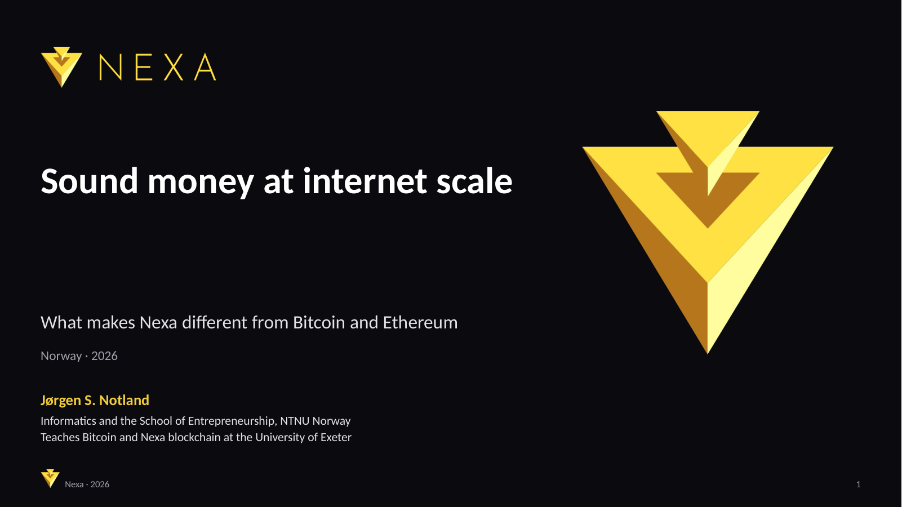

← → to move between slides · N toggles notes · F for fullscreen
Speaker notes
Introduce yourself briefly: informatics and the School of Entrepreneurship at NTNU Norway in Trondheim, and you teach Bitcoin and Nexa blockchain at the University of Exeter. For this audience the NTNU Norway link matters: the environmental research on slide 6 comes from your own university. Opening. This deck is written for a sceptical audience. The first content slide concedes the criticism before answering it. Sources for every number are in the notes of each slide.